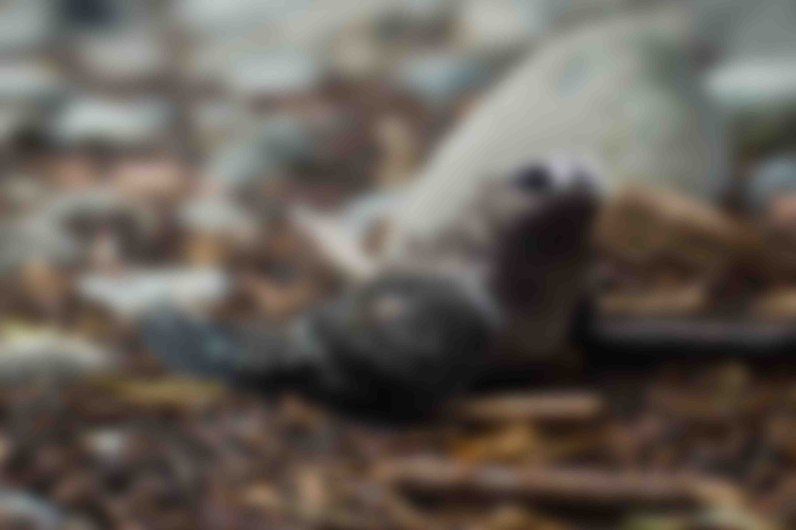
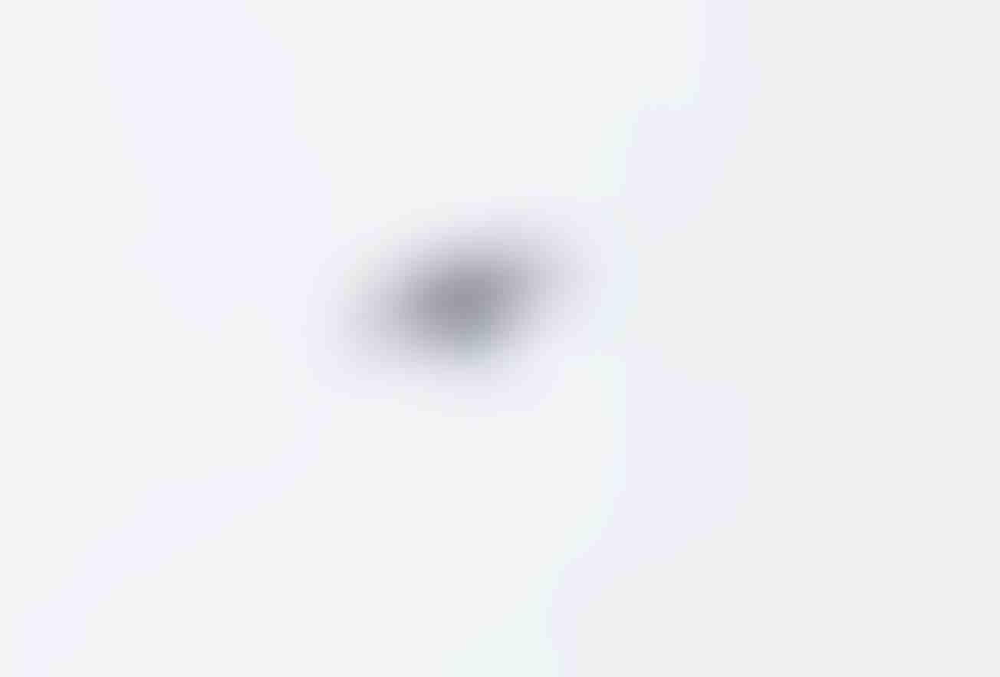
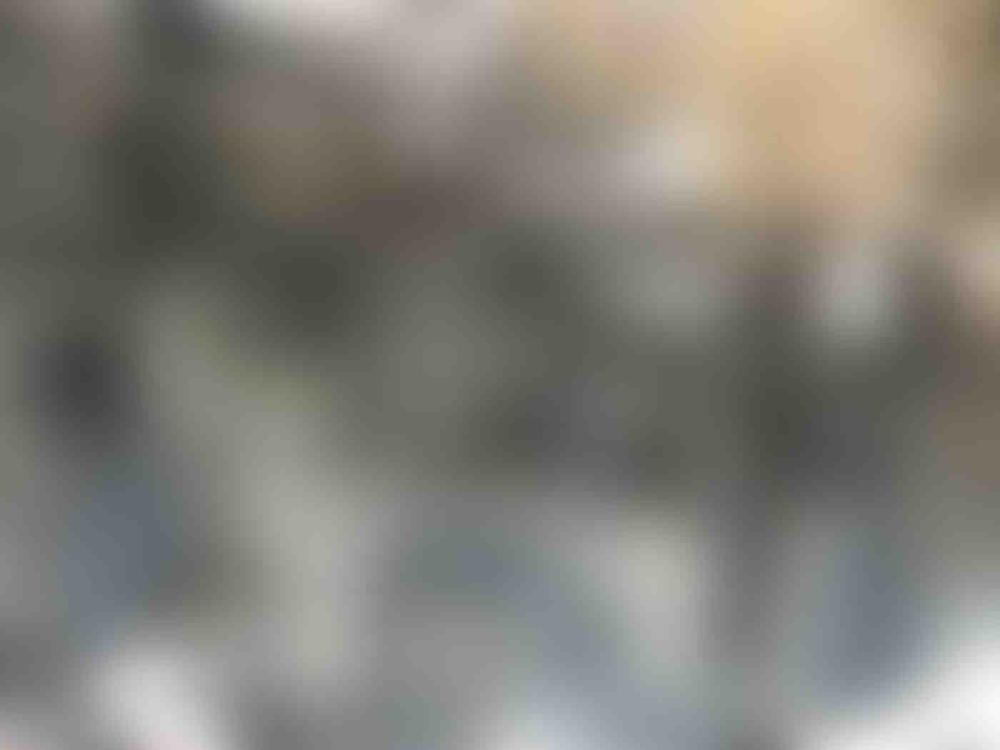
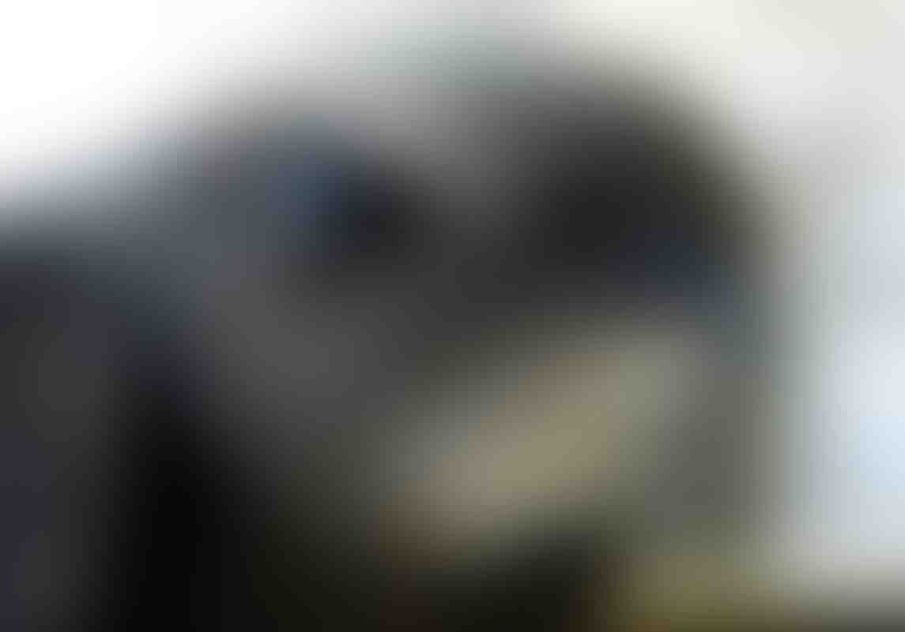
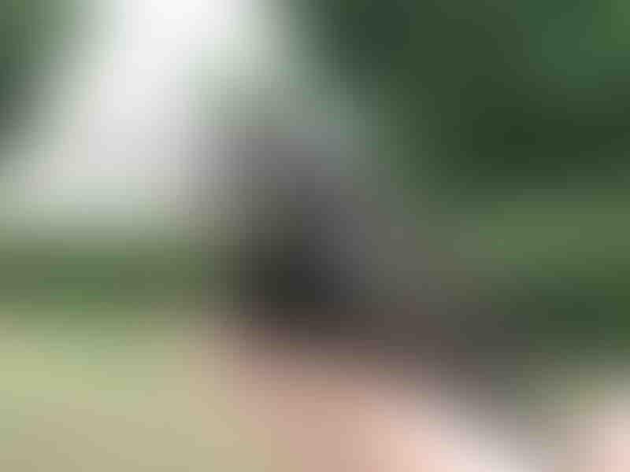
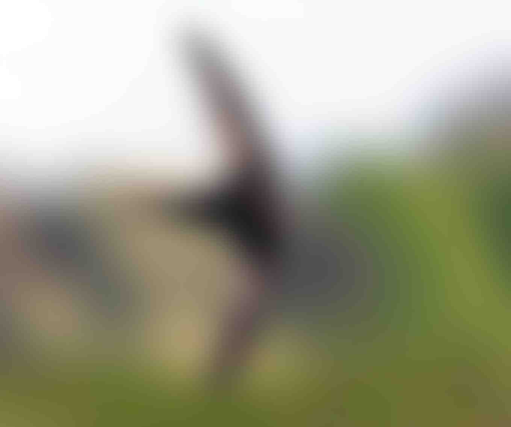

Стриж длиной 15—18 см и массой 35—45 г(35 г — масса Cypseloides niger costaricensis, 45 г — масса Cypseloides niger borealis). У чёрного американского стрижа крепкое тело и длинные широкие крылья, хвост с неглубоким, но хорошо заметным разрезом. Глубина разреза на хвосте колеблется от 4 до 15 мм. Стержень у перьев хвоста лишь слегка укреплён и не выступает за опахало. Возможно, глубина разреза на хвосте и цвет оперения связаны с возрастом птицы. У более старых птиц вырез обычно глубже.  Оперение тёмное, чёрное или тёмно-коричневое. По сторонам лба и на уздечке (область между клювом и глазом) кончики перьев белые, за глазом расположено чёрное пятно. Кроющие перья уха и горло окрашены равномерно, наиболее светлый цвет на подбородке. По многим описаниям, вся голова немного светлее остального тела, серая или коричневая. Сверху чёрный американский стриж чёрный с немного более светлыми боками и надхвостьем, крылья также темнее сверху и светлее под крылом, что характерно для всех американских стрижей. Внешние первостепенные маховые перья темнее внутренних первостепенных и второстепенных маховых перьев. В нижней части птиц кончики перьев часто, но не всегда, окрашены в белый цвет. Хвост тёмный. Молодые птицы имеют тёмно-коричневое оперение, более тёмное сверху, кончики всех перьев — белые. По сторонам головы и на уздечке они особенно заметны и образуют рисунок. Перья под клювом почти полностью белые. Белые кончики перьев сохраняются и на второй год жизни. Вопрос наличия или отсутствия полового диморфизма в окраске чёрных американских стрижей остаётся предметом дискуссии. Некоторые учёные полагают, что у самок белые полосы на концах перьев шире, чем у самцов, но по словам Мануэля Марина (англ. Manuel Marin) и Фрэнка Гарфилда Стайлса, у всех исследованных ими самок и половины самцов на некоторых перьях брюха была белая полоса. Возможно, самцы крупнее и темнее самок, а их хвост имеет более глубокий вырез. Сэмюэл Ратбун (англ. Samuel Rathbun) утверждал, что иногда различал их в воздухе. Некоторые исследования ДНК подтверждают визуальные различия.   Линька чёрного американского стрижа изучена очень слабо. Ни у одной из особей, пойманных в штате Колорадо в летние месяцы, линьки не наблюдалось. У птиц, пойманных в Коста-Рике в промежуток с апреля по конец июня, линька не пересекалась по времени с сезоном размножения. У птиц, пойманных в штате Вашингтон в промежуток с июня по сентябрь, перья были свежие и яркие, скорее всего недавно после линьки, однако её следов не наблюдалось. У многих других стрижей подсемейства Cypseloidenae линька начинается во время сезона размножения. Среди трёх подвидов чёрного американского стрижа самым маленьким является номинативный подвид Cypseloides niger niger, обитающий в Вест-Индии. Самым крупным — Cypseloides niger borealis, обитающий в Северной Америке вплоть до Аляски и Британской Колумбии. Он обладает очень чёрным оперением с хорошо заметными белыми кончиками на перьях, голова, особенно лоб, — серые. Подвид Cypseloides niger costaricensis расположен между ними. Таким образом, размер птиц возрастает с юга на север, что может быть связано как со специализацией подвидов, так и с правилом Бергмана.  Американский орнитолог Роберт Риджуэй в работе 1911 года приводит следующие размеры C. n. borealis: длина крыла взрослого самца — 157,5—175 мм, самки — 156—164 мм; длина хвоста самца — 53—66 мм, самки 47—58,5 мм. Длина крыла C. n. niger по данным Юджина Айзенмана и Федерико Карлоса Лемана 1962 года составляет 148—158 мм у самцов и 142—154 мм у самок. Длина крыла C. n. costaricensis по данным Марина и Стайлса 1992 года составляет 159,15 мм, хвоста — 53,55 мм.   В Северной Америке чёрный американский стриж отличается от остальных стрижей раздвоенным хвостом и своими размерами, так как является самым крупным стрижом к северу от Мексики. В южной части ареала глубокой вилкой на хвосте обладает также красношейный американский стриж (Streptoprocne rutila). У белогорлого американского стрижа (Cypseloides cryptus) и Cypseloides storeri хвост заметно короче, а пятнистолобый американский стриж (Cypseloides cherriei) обладает меньшими размерами, средняя длина крыла у него составляет 119,6 мм против 151 мм у симпатрического C. n. costaricensis. Чёрные американские стрижи отличаются от других представителей рода заметно более светлой головой. В Южной и Центральной Америке данный вид легко перепутать с другими американскими стрижами (Cypseloides)[4], особенно учитывая их высоту полёта. Часто корректная идентификация возможна только для пойманных птиц.